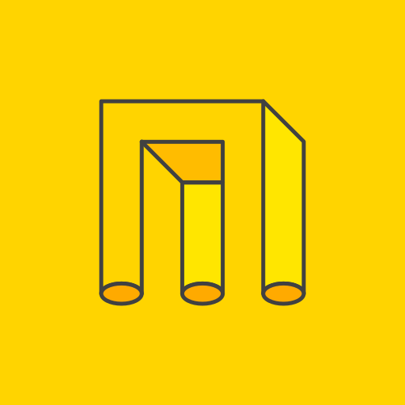

Hi 👋
Software engineer at DSTA in Singapore and an NUS Computer Science graduate. I build backend services, the data models under them and the deployment around them.
Work
-
 Aug 2026 – now
Software Engineer
DSTA
Aug 2026 – now
Software Engineer
DSTA
-

Jan – Jul 2026 Software Engineer Intern Nested Technologies. Read the stories
Stories from Nested Technologies
Software Engineer Intern, Jan – Jul 2026A small startup with three products: Julia, an AI quotation tool; Mailmail, an email campaign service; and Autoscrape, a contact-finding tool. Most of my work was on Julia, with some on Mailmail. Here are some notable examples; pick one to read it.
Projects
What I’ve built, shipped and tested.